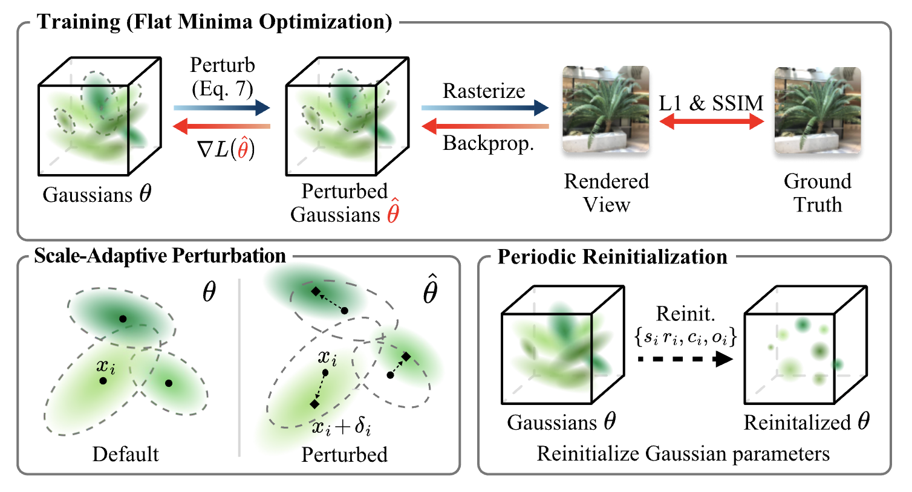
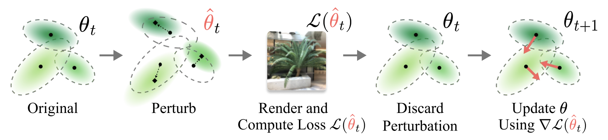
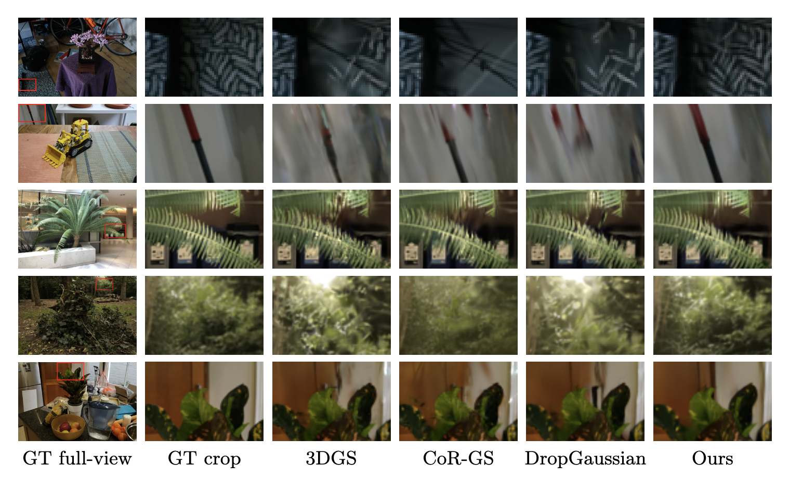

Recent advances in neural rendering have established 3D Gaussian Splatting (3DGS) as a highly efficient representation for novel view synthesis, enabling fast training and real-time rendering with strong fidelity. However, when supervision is limited to sparse input views, 3DGS tends to overfit to the observed images and generalize poorly to unseen viewpoints. We address this challenge from the perspective of flat minima (FM) optimization, which seeks solutions that remain stable under small parameter perturbations. Viewing Gaussian parameters as trainable weights, we adapt FM principles to the geometric and dynamic nature of 3DGS with a lightweight training framework. Our method regularizes optimization with controlled Gaussian perturbations that account for each Gaussian's anisotropy and the training progress, preserving fine details while improving robustness to sparse-view overfitting. To further stabilize this flat minima optimization process, we introduce periodic reinitialization, which temporarily returns non-positional parameters to their initial states for a short window. Together, these techniques integrate seamlessly into existing 3DGS pipelines without architectural changes. Experiments on LLFF and Mip-NeRF360 datasets demonstrate improved quantitative metrics and perceptual quality under sparse-view supervision, producing reconstructions that are sharper, more stable, and better generalized to novel viewpoints.


